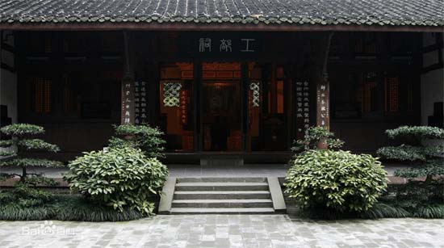

杜甫草堂
全国重点文物保护单位，国家AAAA级旅游景区，国家一级博物馆，全国古籍重点保护单位。
杜甫草堂坐落成都市西门外的浣花溪畔，是中国唐代大诗人杜甫流寓成都时的故居。

草堂完整保留着清代嘉庆重建时的格局，总面积近300亩。园林是非常独特的“混合式”中国古典园林。博物馆按功能区分为：文物景点游览区（草堂旧址）、园林景点游览区（梅园）和服务区（草堂寺）。草堂旧址内，照壁、正门、大廨、诗史堂、柴门、工部祠排列在一条中轴线上，两旁配以对称的回廊与其它附属建筑，其间有流水萦回，小桥勾连，竹树掩映，显得既庄严肃穆、古朴典雅而又幽深静谧、秀丽清朗。工部祠东侧是“少陵草堂”碑亭，象征着杜甫的茅屋，已成为杜甫草堂的标志性景点和成都的著名景观。
今日草堂，古朴典雅，规模宏伟，占地300多亩。其中大廨、诗史堂、工部祠3座主要纪念性建筑物，坐落在中轴线上，幽深宁静。廨堂之间，回廊环绕，别有情趣。祠前东穿花径，西凭水槛，祠后点缀亭、台、池、榭，又是一番风光。园内有蔽日遮天的香楠林、傲霜迎春的梅苑、清香四溢的兰园、茂密如云的翠竹苍松。
今天的草堂占地面积近300亩，仍完整保留着明弘治十三年（公元1500年）和清嘉庆十六年（公元1811年）修葺扩建时的建筑格局，建筑古朴典雅、园林清幽秀丽，是中国文学史上的一块圣地。1955年成立杜甫纪念馆，1985年更名为成都杜甫草堂博物馆，是中国规模最大、保存最完好、知名度最高且最具特色的杜甫行踪遗迹地，年游客量达百万余人次。